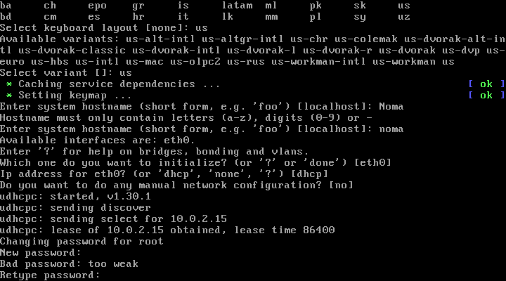
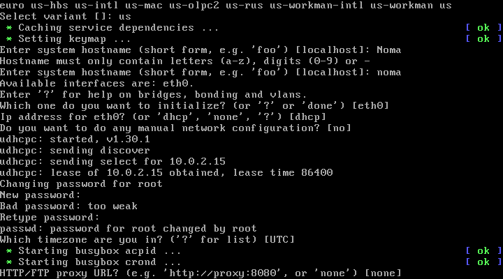
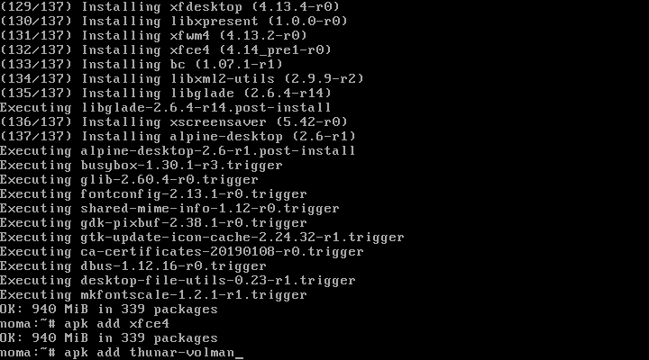

Установка Alpine Linux
Инструкции Обновлено: 11 ноября, 2019 10 omya
Итак, что же мы знаем об Alpine Linux и зачем его устанавливать? Во-первых, он базируется на musl и BusyBox, во-вторых, это единственный независимый дистрибутив Linux предоставляющий безопасность в общих целях. Его разработка была предопределена концепцией обеспечения безопасности, а для защиты от вредоносного кода было решено использовать PaX и SSP.
Стоит отметить его необычно неприхотливые требования к ресурсам системы. Пакеты используются apk, но некоторые придется установить самостоятельно. Руководство, конечно же, присутствует на сайте дистрибутива, которому необходимо не более 8 МБ, а минимальная установка на диск требует не более 130 МБ свободного места. Для управления пакетами в Alpine используется apk. И некоторых пакетов, которые Вам будут нужны, по умолчанию не будет в Alpine.
Переходим по этой ссылке https://www.alpinelinux.org/downloads/ и качаем образ:
Нам нужен STANDARD.
Все как обычно, — если у вас Linux, то качаем Unebootin; если у вас Windows, то качаем Rufus. Ссылки предоставил.
Перезагружаем компьютер и заходим в BIOS. Нам надо зайти во вкладку Boot и указать в пункте 1st Boot Device вашу флешку. Затем сохраните настройки и перезагрузите компьютер.
Заранее говорю, что все делается через командную строку.
Пишем для входа в командную оболочку:
root
Далее выполняем команду:
setup-alpnie
Таким образом мы запускаем процесс установки
5. Раскладка клавиатуры
Выбираем раскладку из списка. В моем случае это:
us
Жмем далее и снова пишем:
us
При указании имени компьютера обратите внимание на то, что следует использовать числа и символы нижнего регистра. Например, имя Noma я не смог указать, зато имя noma вполне проходит по параметрам.
Сразу же после указания имени хоста нам предложат настройки, связанные с интернетом. Если у вас проводной интернет по DHCP, их просто пропускаем нажатием Enter. Все это можно настроить уже потом непосредственно в установленной системе.

Указываем пароль для суперпользователя. Если он 6-значный, например, то вы получите предупреждение о том, что пароль слишком слабый, но это не мешает установке.

Далее вы можете установить прокси или просто пропустить. В моем случае я просто нажал Enter и пропустил этот пункт, так как все это тоже можно будет потом настроить, при необходимости.
Шаг 10. Выбор зеркала репозиториев
Вам дадут список зеркал, если вы этого не сделаете, то система будет проверять каждое и самостоятельно выберет наиболее подходящее.
Примечание для жителей Украины. Если вы не укажите зеркало, то рискуете попасть на Yandex, а с ним установка не получится, так как компания под санкциями. В вашем случае просто выберете любое другое.
Если вы хотите, то можете установить и ssh сервер. И снова, на данном этапе это не является необходимым, и вы всегда сможете его поднять позже.
Система предложит выбрать любой из доступных дисков для установки ОС. Я указываю следующее:
sda
Далее вам надо выбрать для чего будет использоваться этот диск. Так как это системный диск, то я выбираю:
sys
Получаем предупреждение о том, что все данные с выбранного диска будут удалены. Впрочем, ничего удивительного. Пишем:
y
Когда установка Alpine Linux завершится, система попросит о перезагрузке. Для этого извлекаем носитель на котором система и перезагружаемся командой:
reboot
Пишем в логине:
root
Далее пишем пароль, который ранее задавали.
Шаг 15. Установка редактора nano
Так как у нас нет редактора, то мы установим. Это будет редактор Nano. Сделаем это с помощью команды:
apk add nano
Шаг 16. Редактирование файла с репозиториями и обновление
Теперь нам надо отредактировать файл репозиториев. Это позволит нам обновить систему и продолжить установку. Пишем:
/etc/apk/repositories
Чтобы получить доступ к репозиторию сообщества надо раскомментиовать третью строку:
#http://dl-cdn.alpinelinux.org/alpnie/v3.10/community
Для этого удалите # перед ней. После жмем ctrl+o -> Enter -> ctrl+x. После всего пишем команду:
apk update
Шаг 17. Установка графического интерфейса
Выполняем команду:
setup-xorg-base
Теперь выполняем команду:
apk add alpine-desktop
Шаг 18. Устанавливаем окружение xfce4
Выполняем команду:
apk add xfce4
Шаг 19. Устанавливаем файловый менеджер

Выполняем команду:
apk add thunar-volman
Достаточно тривиально, но проверено.
Выполняем команду:
apk add Faenza-icon-theme
Шаг 21. Устанавливаем менеджер входа
Выполняем команду:
apk add slim
Так как система является легковесной, то будем работать в направлении её преимуществ. Это ответ на вопрос: А почему Slim?.
Шаг 22. Запуск сервиса D-Bus
Чтобы приложения могли между собой взаимодействовать, нам надо запустить сервис межпроцессорного взаимодействия (IPC). Выполняем команду:
rc-service dbus start
Работает, отлично. Теперь добавим его в автозагрузку?
Выполняем команду:
rc-update add dbus
Выполняем команду:
reboot
Это позволит нам перезагрузить устройство и войти в систему с графическим интерфейсом.
В поле username пишем root и указываем раннее заданный пароль. Ну а дальше рабочий стол.
Теперь вы знаете как установить Alpine Linux, а также как минимально настроить систему, так, чтобы с ней можно было работать.
Похожие записи:
Нет похожих записей